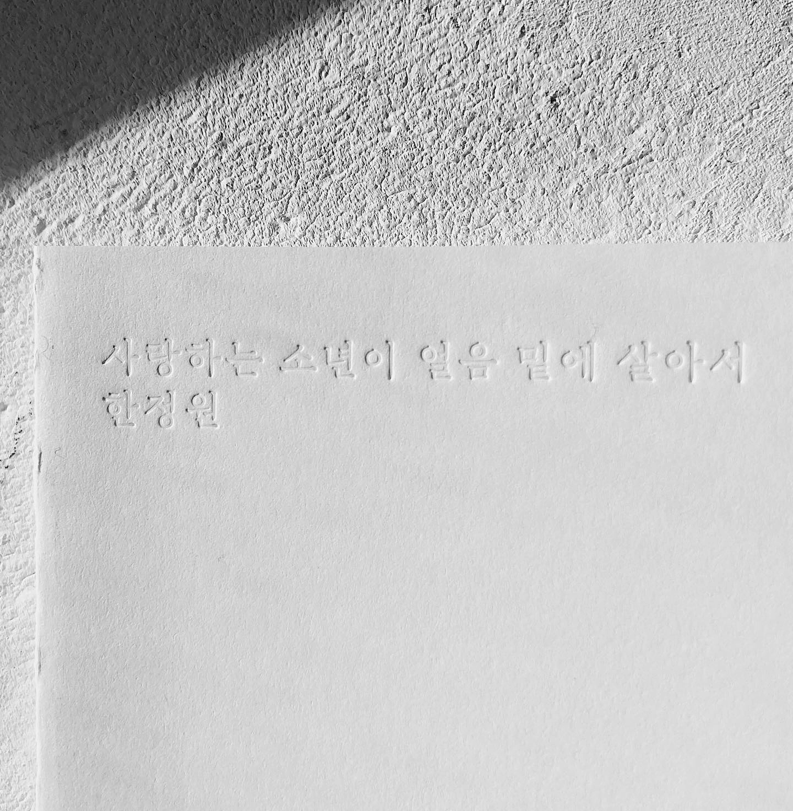

240108.

책의 첫인상은 ’매우 아담하다’였다. 내 엄지와 검지를 길게 주욱 펼쳐 최대한의 한 뼘을 만들면 이 책의 세로를 품을 수 있을 정도로 자그마하다. 크기 정보를 찾아보니 가로 105mm, 세로 175mm. 내가 산 책 중에 아마 가장 작은 책일 것이다. 이렇게 자그마한 책에 어떤 시들이, 어떻게 담겨있을까?
책을 펼친다. 이 책은 보통의 책의 방식을 따르지 않는다. 보통의 책이라면 책 등을 잡고 좌우로 페이지를 넘기는 게 정석이다. 이 책은 좌우로 보는 게 아니라 가로로 돌려서 위아래로 올리며 읽어야 한다. 마치 연극 대본을 읽는 듯.
본문 서체의 인상이 좋다. 찾아보니 초행이라는 서체를 활용했다고 한다. 서체의 이름도 멋이 있다. 초행은 1957년에 제작된 <동아출판사 새백과사전> 초반본에 사용된 본문 활자인 동아 명조를 재해석한 서체다. 당시 6.5pt의 작은 크기로 조판했던 동아 명조를 바탕으로 제작해서 작은 크기에도 선명하게 보이는 특징이 있다.
이쯤 되니 아담하다는 첫인상에 ’아름답다’는 또 다른 인상을 추가해야겠다는 마음이 든다. 이 책이 아름답다고 느낀 건 나만의 취향이 아닌 듯하다. 이 책을 포함해 시간의흐름 시인선 세 권이 <2023 서울국제도서전>에서 ’한국에서 가장 아름다운 책’에 선정되었으니.
책을 읽는다. 소녀와 소년의 이야기다. 소녀, 소년의 대사도 있지만 대본처럼 지문이 있다. 대본의 어느 페이지를 펼치더라도 시가 있다.
소녀 멀구나.
소년 그리운 만큼 멀구나.
소녀 깊겠지.
소년 그리운 만큼 깊겠지.
소녀 바다는 수심(水深)이 있으니까.
소년 수심(愁心)이 있으니까.
소녀 그래서 물결이 지나 봐.
소년 그래서 주름이 지나 봐.
문득 어린이가 쓴 동시를 읽고 있다는 느낌이 들기도 한다. 시를 잘은 모르지만 대본에 등장하는 친구들처럼 대화를 하다가 말꼬리를 잡고, 단어를 가지고 말장난을 치는 과정이 시를 만드는 과정과 크게 다를까. 이 책은 한정원 시인의 시집이지만 시집에 등장하는 소녀가, 소년이, 노파가, 베개가, 모서리가 곧 시인인 듯했다.
소년 조심해.
울다가 웃으면 어른이 된다.
시의 내용이 설명적이거나 직관적이진 않는다. 혹은 소녀와 소년의 우주를 이해하기엔 내가 너무나 많이 울다가 웃었을지도 모르겠다.
다른 누군가의 우주를 이해하기 위해선 깊은 생각이 필요하다. 소년의 우주도 그렇고, 소녀의 우주도 그렇고, 내 건너편에 앉아있는 직원 A의 우주도 그렇다. 이 책은 그런 깊은 생각을 차분히 길러주기 좋은 시집일지 모른다.
좋은 사람에게서 좋은 시집을 추천받았다. 올해의 첫인상이 좋다.